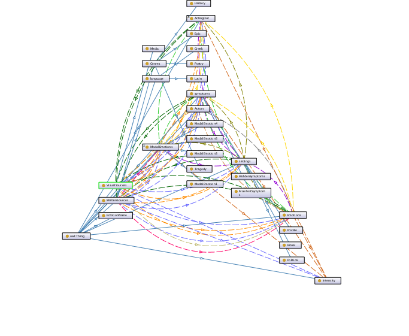

This is a page to display contents and output of the workshop in Odense University 16-18 February 2017 for the project Emotions Through Time: From Antiquity to Byzantium.
Sabato mattina continuiamo il lavoro di annotazione
This page displays with Feedwind a RSS feed from Hypothes.is annotations and a timeline showing the same data from a public google spreadsheet.
The annotations can be downloaded and used to populate a database with existing tools as this http://jonudell.net/h/facet.html although the open access annotations in hypothes.is are already much more reusable via api, rss, and other services they provide.
These are simply examples of simple workflow results/visualizations of annotations on online data with Hypothesis.Go to the examples.
The annotations should follow a meaningfull structure for display and analysis of the data produced.Go to the ontology.
It would be nice to have a real user needs based visualization at the end of the workshop, based on the text on which we will work, like a graph or a map.
This timeline from Knight Lab TimelineJS uses data entered in this public google spreadsheet. The same visualization tool can also be fed dynamically generated data.
MEMENTO: The ontology is a reflection of the real world, and if no categorization exists in the real world, then the ontology should reflect that.
 Click Me to return to the top!